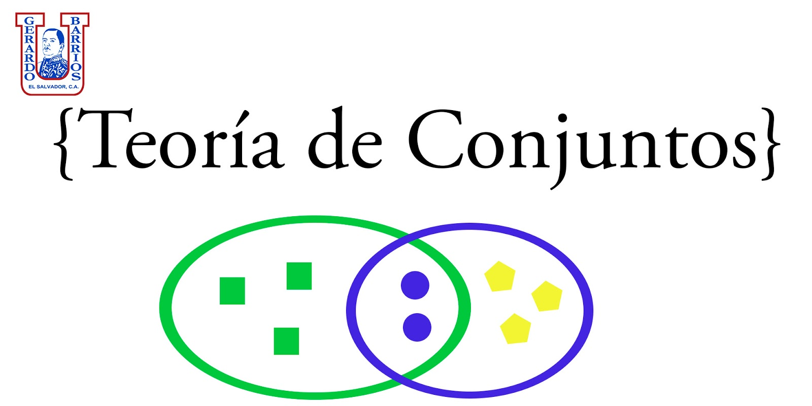
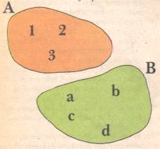
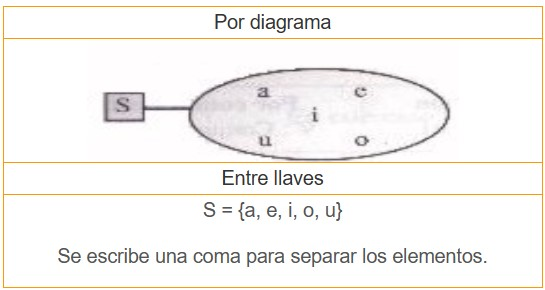

Teoría básica de conjuntos
La teoría de conjuntos es una rama de la lógica-matemática que se encarga del estudio de las relaciones entre entidades denominadas conjuntos. Los conjuntos se caracterizan por ser colecciones de objetos de una misma naturaleza. Dichos objetos son los elementos del conjunto y pueden ser: números, letras, figuras geométricas, palabras que representan objetos, los objetos mismos y otros.
Fue Georg Cantor, hacia finales del siglo XIX, quien propuso la teoría de conjuntos. Mientras que otros notables matemáticos en el siglo XX hicieron su formalización: Gottlob Frege, Ernst Zermelo, Bertrand Russell, Adolf Fraenkel entre otros.
Los diagramas de Venn son la forma gráfica de representar a un conjunto, y consiste en una figura plana cerrada dentro de la cual están los elementos del conjunto.
Por ejemplo en la figura 1 se muestran dos conjuntos A y B, los cuales tiene elementos en común, los elementos comunes a A y a B. Estos forman un nuevo conjunto que se llama el conjunto intersección de A y B.

Relación de pertenencia
Revisadas estas definiciones será mucho más sencillo comprender la terminología a la que se hará referencia a la hora de abordar el tema de la Pertenencia dentro de los conjuntos, la cual a su vez es vista por las distintas fuentes teóricas como la relación más básica que puede existir entre un elemento y su conjunto.
Viene representada por el símbolo de pertenencia, el cual cuanta con la forma ∈, y que básicamente es usado para señalar que un elemento pertenece a un conjunto determinado. La forma de expresión de esta relación entre elemento y conjunto puede responder a la siguiente:
x ∈ A
Ejemplo de pertenencia
Sin embargo, quizás la forma más eficiente de explicar la Relación de Pertenencia sea a través de la exposición de un ejemplo en concreto, que venga a demostrar en la práctica lo que dice la teoría. A continuación, entonces, un ejemplo de este tipo de relación:
Suponiendo que se establezca un conjunto en base a colores cálidos, cuyo nombre haya sido decidido como Conjunto C, se puede tener la siguiente colección:
C = {Naranja, Rojo, Rojo-naranja, Amarillo, Rojo-amarillo, marrón…}
Se pueden establecer relaciones de pertenencia entre cada uno de los elementos que se pueden ver dentro del Conjunto, y éste, las cuales podrán ser expresadas entonces de la siguiente manera:
Naranja ∈ C
Rojo ∈ C
Rojo-naranja ∈ C
Amarillo ∈ C
Rojo-amarillo ∈ C
Marrón ∈ C
Ejemplo de NO pertenencia
Así mismo, se puede hablar también de la No pertenencia, la cual puede ser definida a su vez como la relación -por negación- que se establece entre un elemento y el conjunto al que no pertenece. En este caso, el signo que sirve para representar esta relación, será ∉ y será leído como “no pertenece”.
Igualmente, a la hora de expresar este tipo de relación entre un elemento y un conjunto, se nombrarán aquellos elementos que no corresponden al criterio de agrupación en base al cual se ha constituido la colección. Un ejemplo de ello, puede ser el siguiente:
Imaginando un conjunto D conformado por las frutas que pueden considerarse cítricas, se tendría entonces la siguiente lista de elementos:
D= {Naranja, Limón, Mandarina, Pomelo, Toronja, Lima}
Se pueden nombrar algunos otros elementos que se consideran no pertenecientes a este conjunto, por ejemplo:
Patilla ∉ D
Nispero ∉ D
Banana ∉ D
Melocotón ∉ D
Aguacate ∉ D
Cacao ∉ D
Representación de conjuntos
Diagrama de Venn
Es habitual representar los conjuntos en forma gráfica mediante los Diagramas de Venn .
En estos diagramas el conjunto se representa mediante una superficie limitada por una línea. En su interior se colocan los elementos del conjunto. Cada porción del plano limitada se nombra con una letra mayúscula.

Por llaves
El conjunto A está formado por los elementos 1, 2, 3.
El conjunto B está formado por los elementos a, b, c, d.
Existe, además, otra forma de representarlos que es entre llaves.
En estos ejemplos se escribe:
A = {1, 2, 3}
B = {a, b, c, d}
Otro ejemplo:
